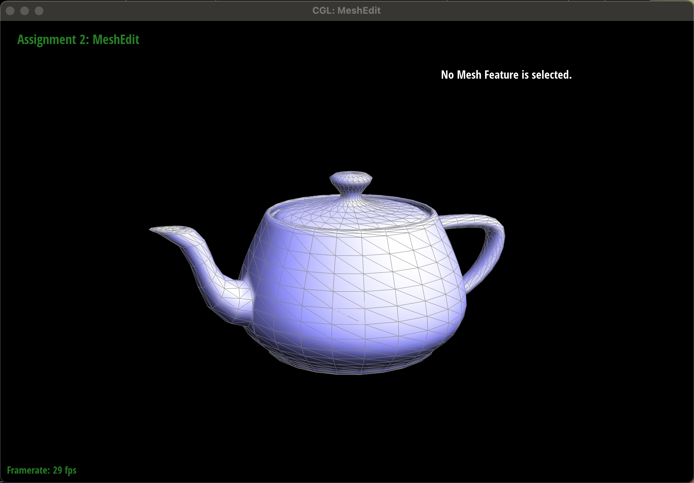
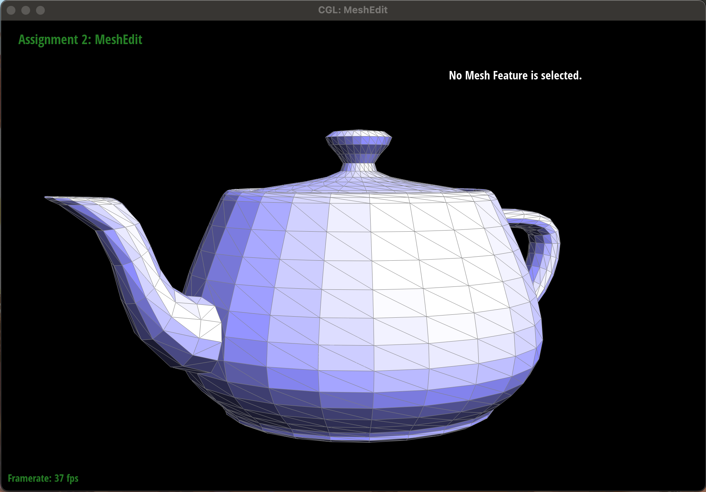
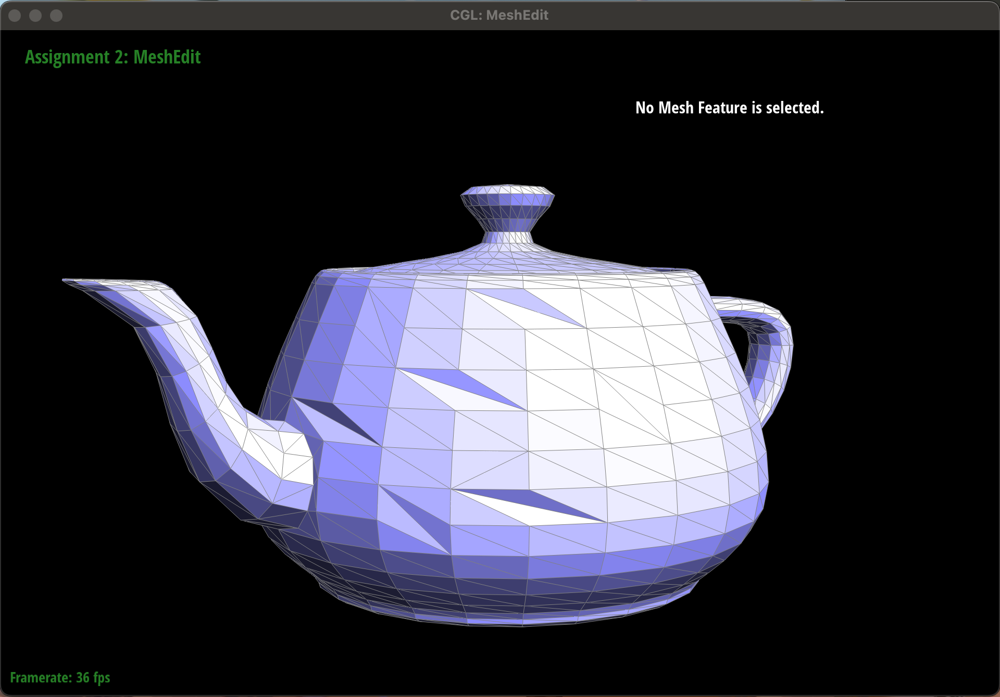
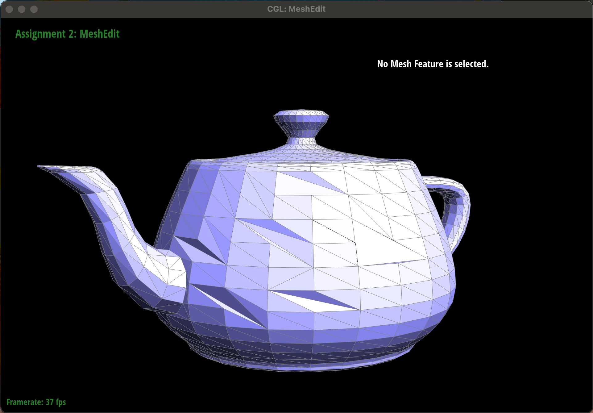
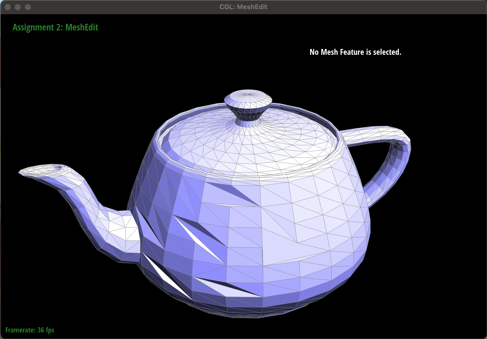
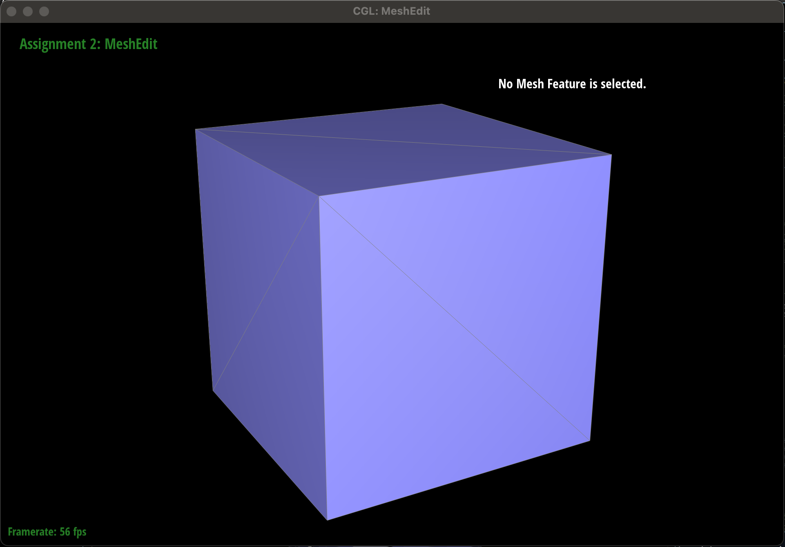
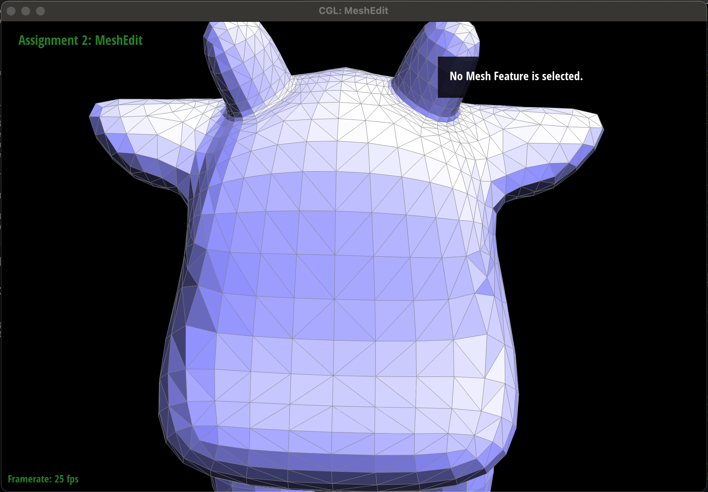
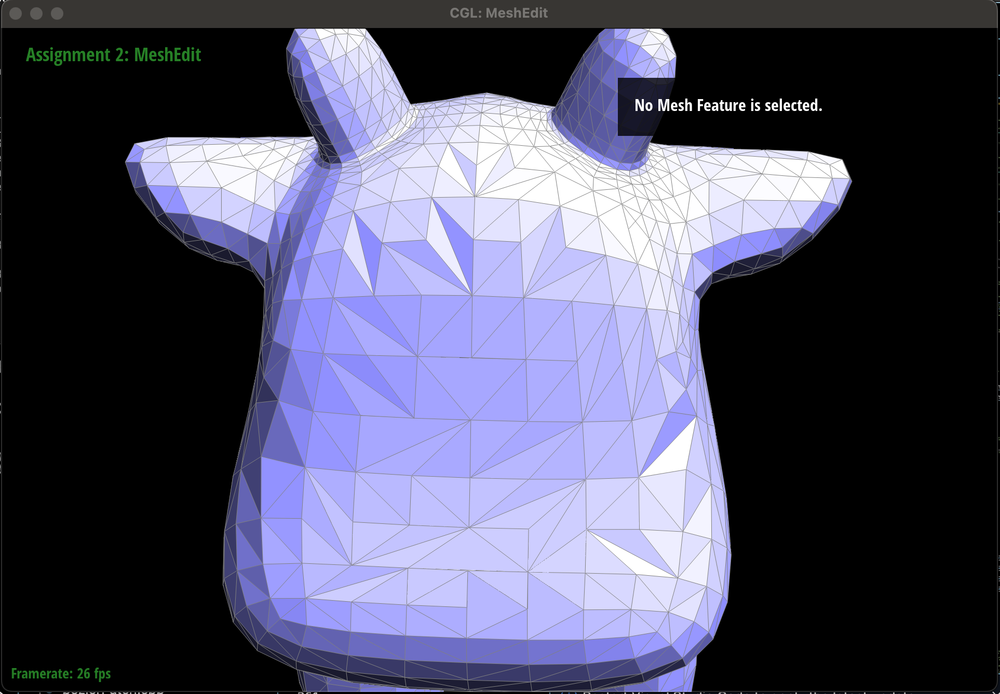
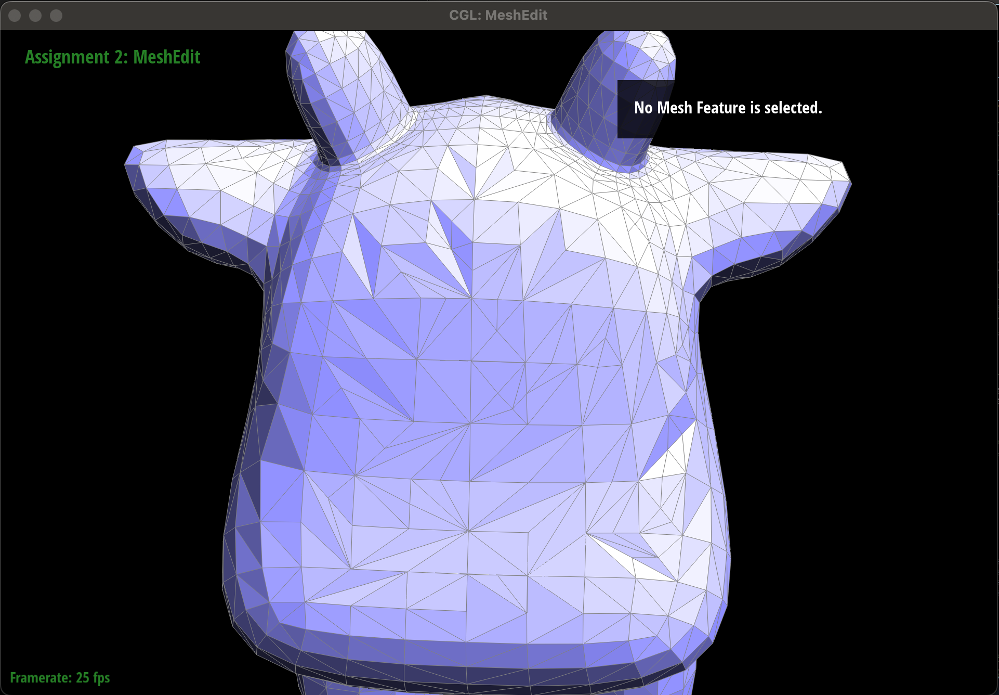
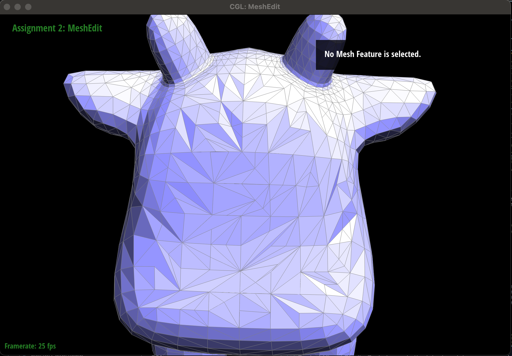

CS184/284A Spring 2025 Homework 2 Write-Up
Link to webpage: cs184.eecs.berkeley.edu/sp25/hw2
Link to GitHub repository: github.com/sp25/hw2
Overview
In Homework 2, we focused on geometric modeling. We first started with Bezier curves and surfaces, a commonly utilized way to model smooth surfaces in computer graphics. We implemented these using De Casteljau's Algorithm, a recursive way to implement Bezier curves and surfaces. Next, we worked with triangle meshes and the halfedge data structure. We started by implementing area-weighted vertex normals. We used this for Phong shading, a method of shading that provides better shading than default flat shading for smooth surfaces. Afterwards, we implemented edge flips. An edge flip works by taking a pair of triangles that share an edge and replacing that original edge with a new edge drawn across the other two vertices of the triangles. Next, we implemented edge splits. Edge splits take a pair of adjacent triangles, calculating the midpoint of the shared edge, and adding two new edges from the other vertices to the midpoint. Finally, we implemented loop subdivision for mesh sampling, which converts a coarse polygon mesh into a higher resolution one by using an upsampling algorithm to upsample. Something interesting that we learned about this project was how small changes in the mesh, such as edge flips and splits, can significantly impact the final shape and smoothness of the model. This homework also emphasized the importance and power of the halfedge data structure in meshes.
Section I: Bezier Curves and Surfaces
Part 1: Bezier curves with 1D de Casteljau subdivision
De Casteljau's algorithm is a recursive algorithm that is used to evaluate polynomials via liner intepolation. More
specifically, it can be used to evaluate Bezier curves. We implemented it in the evaluateStep() method by first
creating a 2D Vector to store our new intermediary points. Then, we used a for loop, starting at 0 and looping up to
points.size() - 1 times. This ensures we are working on one less point with each recursive call, allowing us to
eventually converge at a singular point. For each pair of adjacent points in the for loop and a given parameter t,
we find the linear interpolation of the two points using \( (1 - t) \cdot p_i + t \cdot p_{i+1} \). We then add this point to our 2D Vector.
Once the for loop has terminated, we return our vector. By pressing E in our GUI, we step along each call of our
recursive function. Once pressing E causes the red point to appear, we have reached our base case and evaluated our
Bezier curve at a single point.

|

|

|

|

|

Part 2: Bezier surfaces with separable 1D de Casteljau
De Casteljau's algorithm applies to Bezier surfaces because instead of working along a one dimensional curve, we are
now working along a two dimensional surface. We accomplish this by using de Casteljau's algorithm twice; first along
u as one of our parameters and then along t as our other parameter. For this task, we
implemented de Casteljau's algorithm by applying the algorithm (using the evaluate1D() method) for each row
of our n x n control points with parameter u. Each point is added to a Vector3D. After we
finish evaluating each row, we then evaluate the Vector3D with parameter v using evaluate1D().
evaluate1D() works by taking a vector of points and a parameter and calling evaluateStep() until
we are left with our final, interpolated point that was represented by the red point in Task 1.

Section II: Triangle Meshes and Half-Edge Data Structure
Part 3: Area-weighted vertex normals
For this task, we implemented area-weighted vertex normals by first defining our variables: HalfedgeCIter
heCIter = halfedge(), HalfedgeCIter start = halfedge(), and Vector3D norUnitVec(0, 0, 0).
Then, we run a do-while loop with the conditional heCIter != start, meaning that we will continue to loop until
we have traversed the entire mesh and end up at our original, starting halfedge. Next, we find the three vertices associated with
a face using the vertex(), next(), and position methods and variables associated with the
halfedge class. Once we have all three vertices, we know that the normal of a face is defined by the vector that is perpendicular
to the surface, so we can find the cross product of these two vectors to receive the third, normal vector. We implemented this step
by defining the vectors as vertex3 - vertex1 and vertex3 - vertex2 and finding the cross product of these
vectors using the cross() method. We then add the normal vector to our norUnitVec variable. We iterate
to the next halfedge using heCIter = heCIter->twin()->next(), giving us the a new halfedge on an adjacent face.
The screenshots below show the difference between default flat shading and phong shading (which we implemented by using area-weighted vertex normals). As we can clearly see, the phong shading is much smoother, where as the default flat shading has different colors contained to each face, making the image look blockier and the shading less smooth.
|
|

|
Part 4: Edge flip
For this task, the way we implemented edge flips was first having a conditional that checks if the two faces that
are adjacent to the passed in edge are not on the boundary. If they are, we do not perform an edge flip and return
e0. If they are not on the boundary, we then store the six half edges that make up the two
triangles of the edge we want to flip. Note that one of these halfedges is the twin of e0.
Next, we store the two associated faces, four associated edges (not including e0), and four
associated vertices. Afterwards, we use setNeighbors() to reset the associated next,
twin, vertex, edge, and face for each of our six halfedges. We
need to do this because as we flip the edges, the relationship between these different parameters of a halfedge change
and we need to update them accordingly. After we've updated the parameters of each halfedge, we need to update the
parameters of the two faces and the four vertices to make sure that they are associated with the correct halfedges
after the edge flip occurs. Finally, we returned e0. An interesting implentation trick that we
used was making sure that we stored all relevant pointers, even if they didn't need to be updated. For example, we
stored all four edges in their own variables, even though we could have referenced them through pointers via the
haldedges. This helped us make sure that we weren't making any minor mistakes when referencing these variables later
on. This ties into a helpful debugging tip; by explicitly storing our variables, it was easier to understand what was
occurring at each step as opposed to getting confused between different pointers.
|

|

|
|

|

|
The debugging for this task was arduous! At first, whenever we flipped an edge, we would create a hole in our
mesh. We knew that this was caused by a misplaced pointer, but with so many pointers, it was hard to determined
exactly what went wrong. We first started debugging by drawing out the edge flip. Drawing the
edge flip and explicitly labeling each relevant part made it easier for us to go through our code and make sure
that our pointers matched up. While this helped our understanding of the task, it did not resolve the error. Thus,
our next debugging step was to be more deliberate in how we were defining our variables. Previously, we defined variables
using other variables. For example, we had HalfedgeCIter he1 = e0->halfedge(),
HalfedgeCIter he2 = he1->twin(), HalfedgeIter heCD = he2->next(),
HalfedgeIter heDB = heCD->next(), etc. While this definitely would have worked, we found it difficult to
tell if our variables were storing the correct information. To counteract this, we stored everything relevant to
e0, he1, and he2. Through these two methods, we were able to find
inconsistencies in our pointers, allowing us to eventually debug this method.
Part 5: Edge split
We implemented task 5 in a very similar way to task 4. The first thing that we did was have a conditional check
whether or not if a face adjacent to the edge we're splitting is on the boundary. If it is, we return a VertexIter
and do not split the edge. If it is not on the boundary, then we first define the four original vertices associated
with the two triangles on the mesh. Alongside the edge we want to split, we calculate the midpoint a place a fifth
vertex there. Next, we store all of the original halfedges inside variables. For this method, we create eight new halfedges
(including twins). Next, we store the three new edges we must create and the given edge e0 in variables. Finally,
we store the original two faces and two new faces in variables. Next, we start setting the neighbors of each of the new
halfedges. We implemented this by setting each of the four triangles separately, creating four distinct cycles that made it
easy for us to understand each pointer in the context of the edge split. Afterwards, we reassign all faces, edges, and vertices
to new halfedges, even if the process is redundant, to ensure that all of the pointers are stored properly. Finally, we return
the midpoint vertex vM. The main implementation trick that we performed for this task was making our code as
legible as possible. We added several comments and most importantly, set the neighbors of each triangle in its own separate
chunk, creating a cycle structure for the next pointers. This made it easy for us to quickly identify any misplaced pointers,
speeding up the debugging process.
|

|
|
|

|

|
|

|

|
Our debugging journey wasn't as bad for task 5 as it was for task 4 as task 4 had taught us a lot about
best practices. We started by first drawing out a before and after diagram of an edge split, making sure to
properly label all relevant edges, faces, vertices, and halfedges. Referencing our task 4 implementation, we
began to implement task 5. Our first iteration was extremely close with the only issue being two of the four
faces not rendering. After carefully going through all of our pointers and referencing our diagram, we found
the pointers that we had defined incorrect with setNeighbors and were able to resolve the issue.